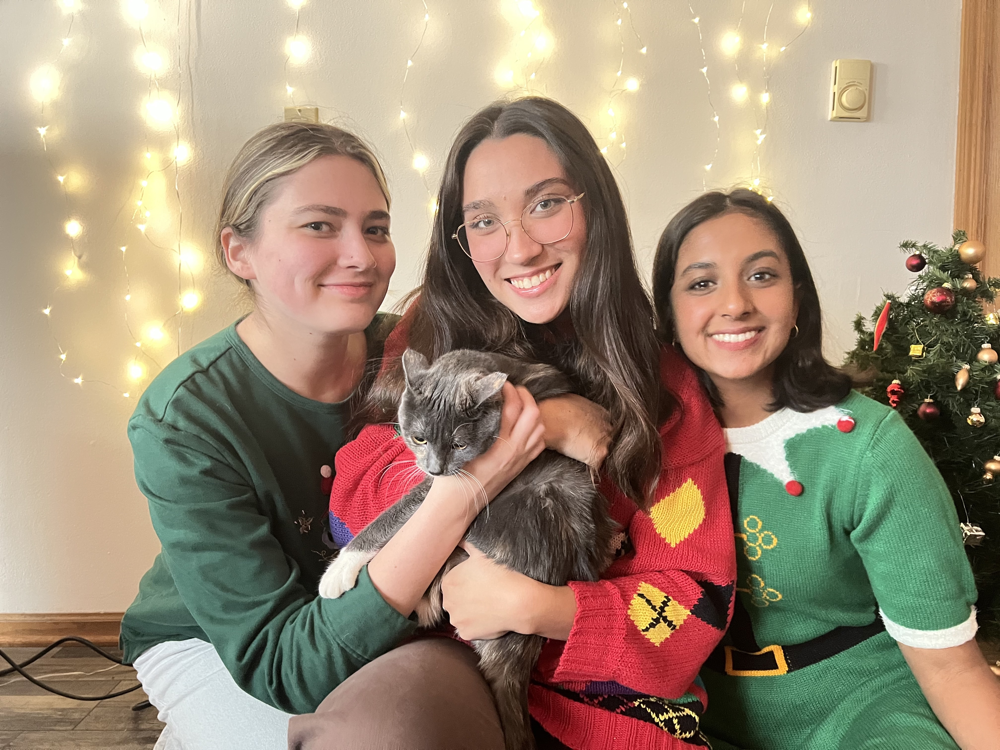
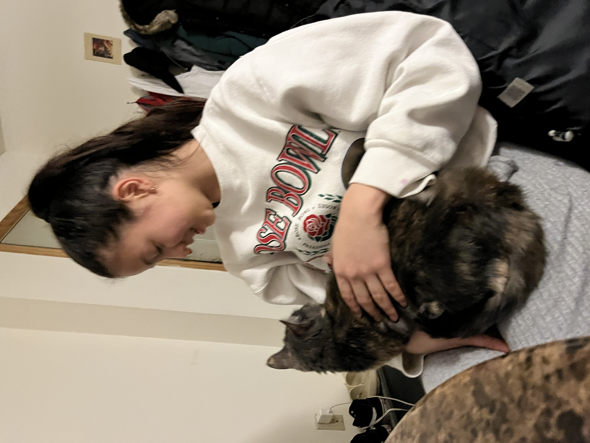
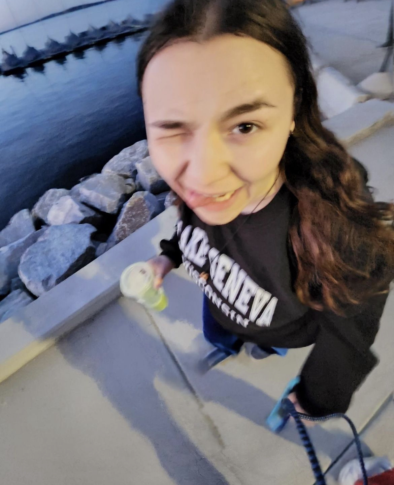

Making friends in college can be difficult. However, use my advice below to make this process a little easier. I have been in college for two years, so I have valuable lessons to share on how to make friends. Below is a list of common places to make friends in college, some stories of how I made friends in college, and pictures of me and the friends I made!
Here are places where you can make friends in college.
Here are the stories of how I met my best three friends at college.:
Here are some pictures of me and my friends.
Here is me (on the left), Angela (in the middle), and our roommate, Priyanka (on the right).
Here is Julia holding my cat, Blue.
Here is Sasha by the lake behind Memorial Union.
For more tips on how to make friends in college, visit the website below.
Visit this website to learn about making friends in college!